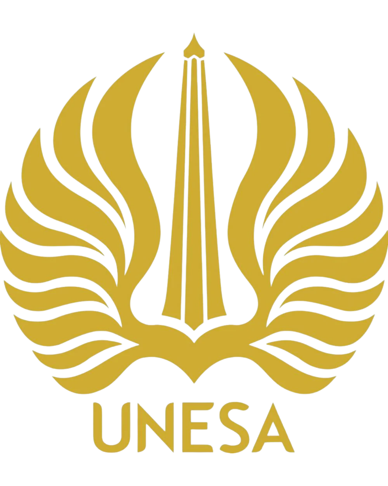
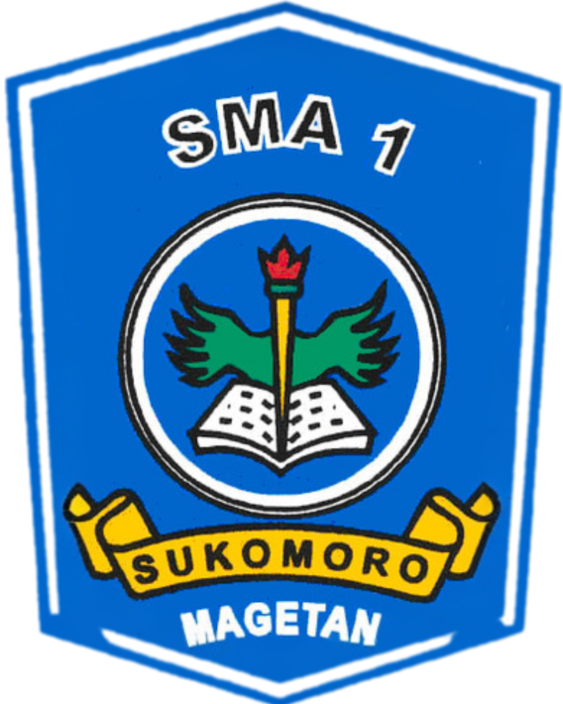

Halo, Saya Yoga Ari Anggoro
Junior Web Developer & Graphic Designer
Selamat datang di portofolio web saya. Saya adalah mahasiswa semester 6 jurusan D4 Manajemen Informatika Fakultas Vokasi Universitas Negeri Surabaya yang memiliki minat dan skill di bidang Frontend Developer, UI/UX Designer dan juga Graphic Designer. Saya memiliki kemampuan inovasi yang tinggi untuk belajar dan menciptakan proyek yang yang modern, responsif, serta berorientasi pada kebutuhan pengguna dengan pendekatan desain dan teknologi yang terintegrasi.

Tentang Saya
Sebagai seorang junior web developer dan graphic designer, saya memiliki minat dalam pengembangan web dan desain antarmuka pengguna. Saat ini saya fokus mempelajari teknologi dasar seperti HTML dan CSS serta memahami konsep UI/UX untuk menciptakan pengalaman pengguna yang lebih baik. Saya senang belajar hal baru, memecahkan masalah, dan terus mengembangkan keterampilan dalam membangun produk digital yang kreatif dan fungsional.
Pendidikan
-

Universitas Negeri Surabaya Jurusan D4 Manajemen Informatika (2023 - Sekarang) -

SMAN 1 Sukomoro Jurusan IPA (2020 - 2023)
Keahlian
- HTML (Struktur Web)
- CSS (Dasar Styling)
- UI/UX (Desain Antarmuka Pengguna)
- Bahasa Indonesia & Inggris
Proyek & Pengalaman Organisasi
Bagian ini menampilkan beberapa proyek yang telah saya kerjakan serta pengalaman organisasi yang saya ikuti sebagai bentuk pengembangan keterampilan dan pengalaman saya:
| No | Nama Proyek / Kegiatan | Peran | Tahun | Deskripsi |
|---|---|---|---|---|
| 1 | Sinergi Unesa | Staff Media Creative | 2025 | Mengelola media sosial dan konten kreatif untuk kegiatan organisasi. |
| 2 | UKM Formadiksi KIP-K Unesa | Staff PSDM & Kominfo | 2023-2025 | Menjadi bagian dari tim organisasi dalam mengelola sumber daya manusia dan komunikasi informasi. |
| 3 | BEM Fakultas Vokasi Unesa | Anggota Aktif Departemen Risnovtek | 2026 | Mengembangkan program dan kegiatan yang berfokus pada inovasi dan teknologi. |
| 4 | Website Sinergi Unesa | Frontend Developer | 2025 | Mengembangkan dan merawat website organisasi. |
Hubungi Saya
Terima kasih telah mengunjungi portofolio saya. Jika Anda tertarik untuk berkolaborasi, memiliki pertanyaan, atau ingin berdiskusi mengenai proyek web dan desain, silakan isi formulir di bawah ini. ini: